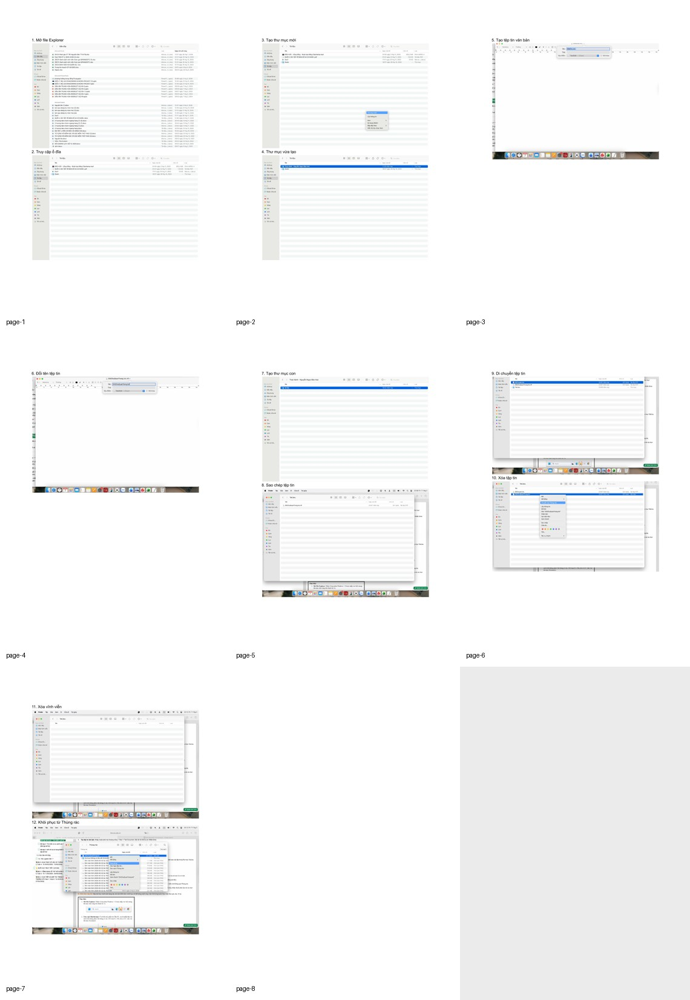
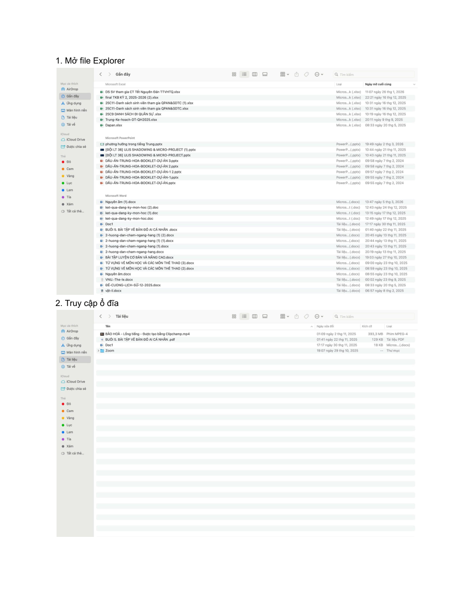
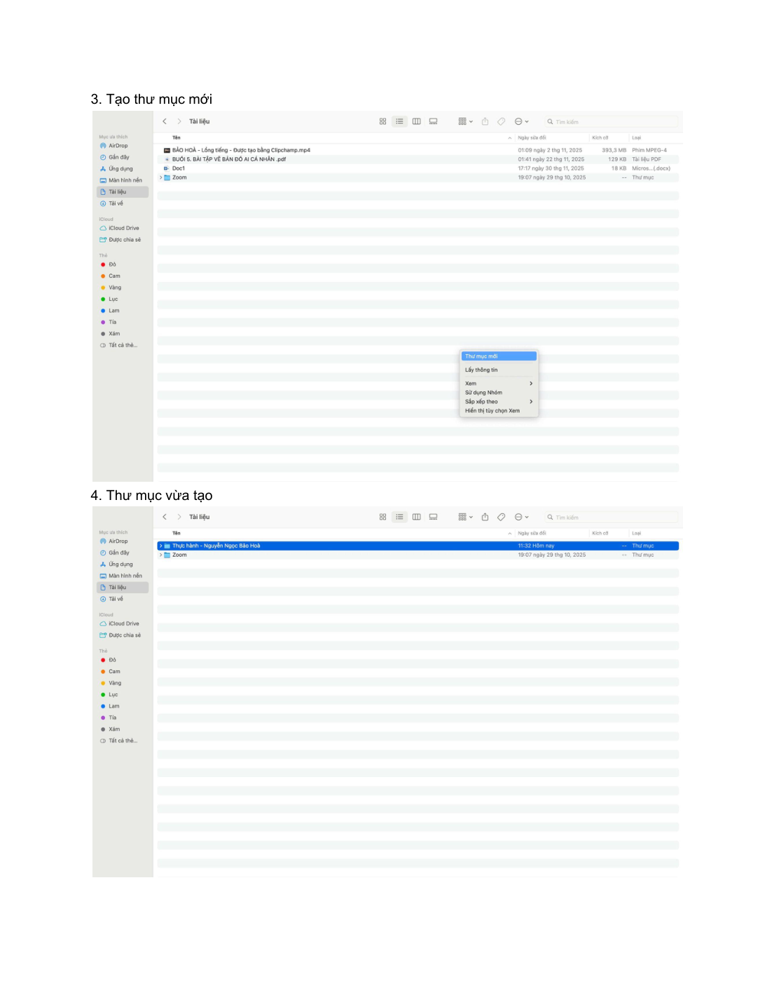
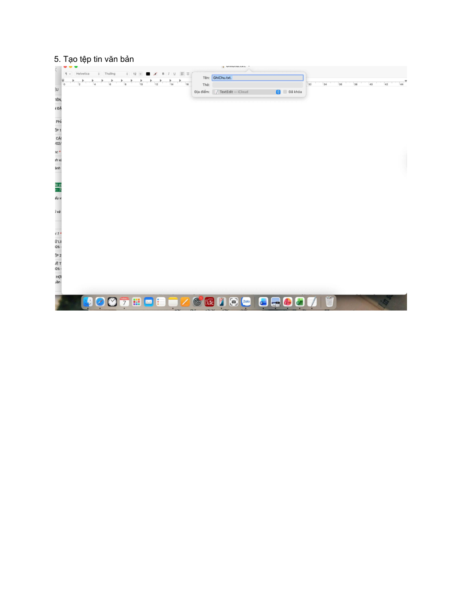
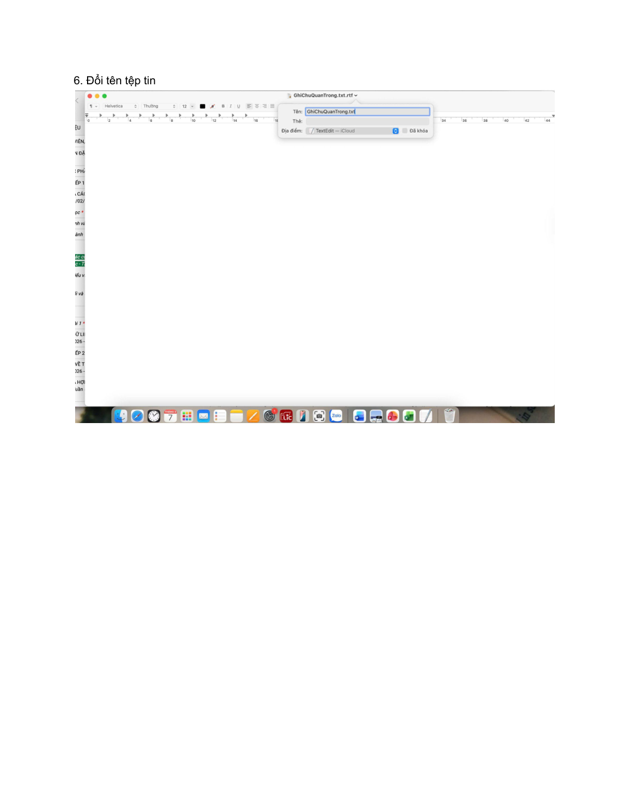
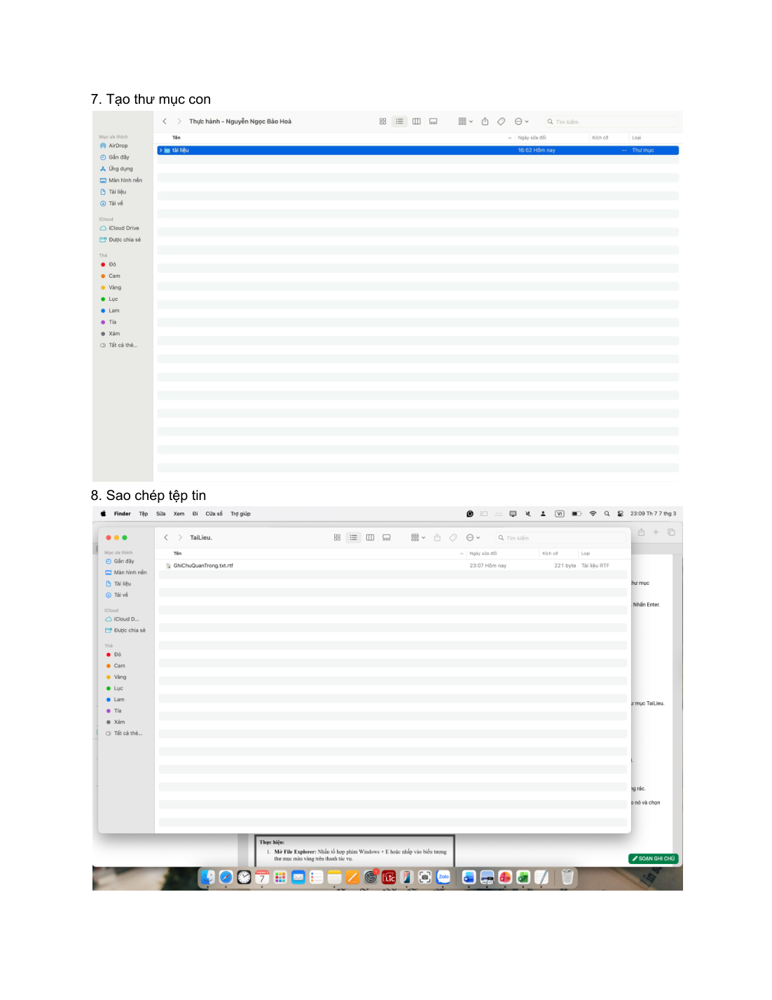
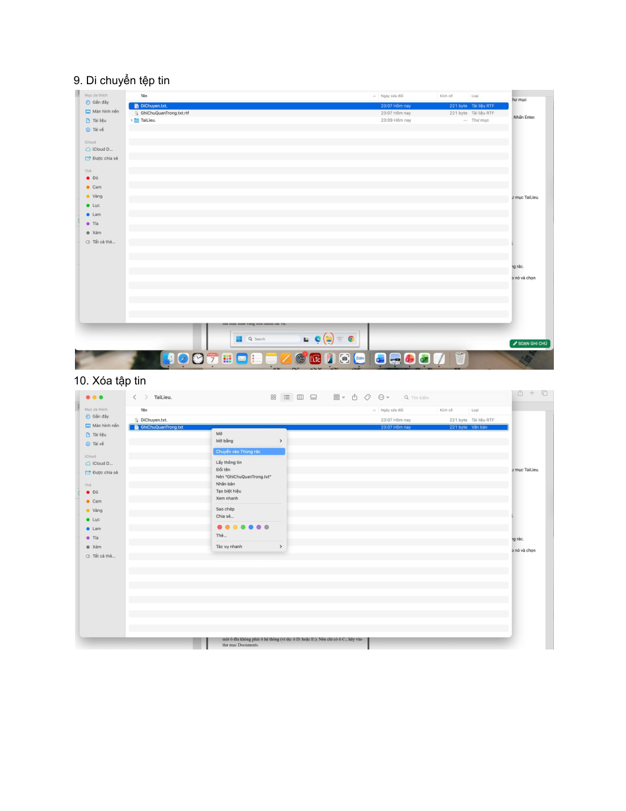
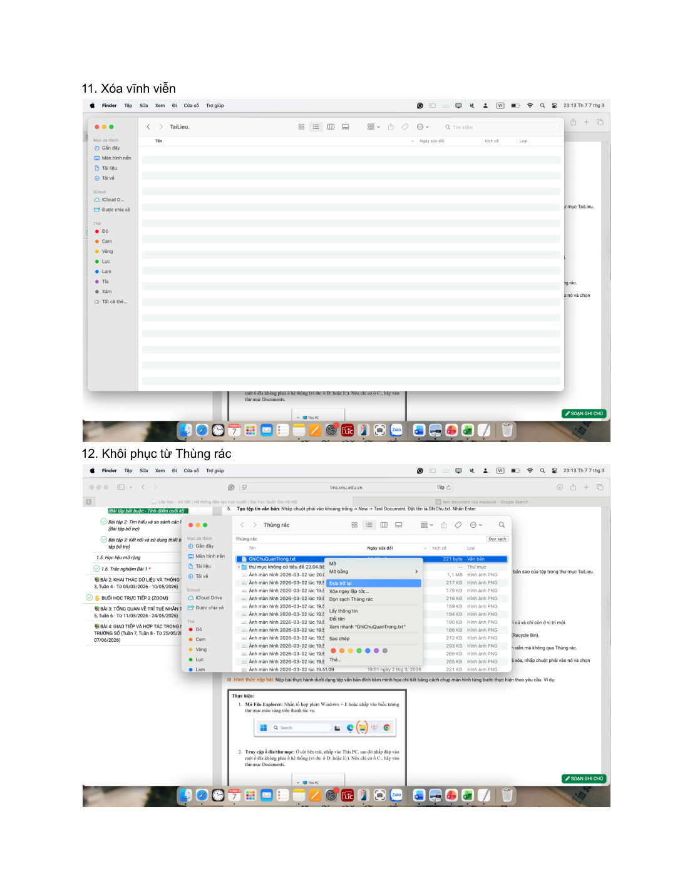

Bài làm tập trung vào các thao tác nền tảng khi quản lý dữ liệu trên máy tính: mở File Explorer, tạo thư mục, tạo tệp văn bản, đổi tên, sao chép, di chuyển, xoá và khôi phục dữ liệu. Toàn bộ quy trình được ghi lại bằng ảnh chụp màn hình theo đúng thứ tự thực hiện.
Quản lý tệpWindowsẢnh minh chứng

Khái quát bài làm
Ý tưởng và định hướng trình bày
Một bài thực hành cơ bản nhưng quan trọng để hình thành thói quen làm việc có tổ chức với thư mục và tệp tin.
Trong phiên bản website, nội dung được viết lại bằng lời văn mạch lạc hơn để tránh lỗi font và giảm cảm giác sao chép nguyên văn từ tài liệu gốc. Mỗi phần đều giữ đúng tinh thần bài làm ban đầu, đồng thời sắp xếp theo nguyên tắc: phần chữ đi trước, ảnh minh chứng đi sau.
Phần 1
Tóm tắt quy trình thực hiện
Ở phần đầu, mình mở File Explorer và truy cập vào ổ đĩa làm việc. Sau đó, mình tạo thư mục chính mang tên ThucHanh_NguyenNgocBaoHoa để làm không gian lưu trữ cho toàn bộ bài thực hành.
Tiếp theo, mình tạo tệp văn bản ban đầu, đổi tên tệp sang dạng cụ thể hơn và thêm thư mục con TaiLieu để phân loại nội dung. Đây là bước giúp việc tổ chức dữ liệu rõ ràng ngay từ đầu.

Minh chứng 1 – tư liệu gốc được đặt ngay sau phần nội dung liên quan.

Minh chứng 2 – tư liệu gốc được đặt ngay sau phần nội dung liên quan.

Minh chứng 3 – tư liệu gốc được đặt ngay sau phần nội dung liên quan.
Phần 2
Sao chép, di chuyển và xoá dữ liệu
Sau khi đã có cấu trúc thư mục, mình thực hiện thao tác sao chép tệp GhiChuQuanTrong.txt vào thư mục TaiLieu để minh hoạ sự khác nhau giữa bản gốc và bản sao.
Mình cũng tạo thêm một tệp khác để thực hành thao tác cắt và dán. Khác với copy, thao tác này làm cho tệp gốc biến mất khỏi vị trí cũ và chỉ còn ở thư mục mới.
Cuối cùng là thao tác xoá tệp, xoá vĩnh viễn và khôi phục từ thùng rác. Nhờ đó, bài thực hành bao quát đủ các tình huống xử lý dữ liệu cơ bản trên máy tính.

Minh chứng 1 – tư liệu gốc được đặt ngay sau phần nội dung liên quan.

Minh chứng 2 – tư liệu gốc được đặt ngay sau phần nội dung liên quan.

Minh chứng 3 – tư liệu gốc được đặt ngay sau phần nội dung liên quan.

Minh chứng 4 – tư liệu gốc được đặt ngay sau phần nội dung liên quan.Minh chứng 5 – tư liệu gốc được đặt ngay sau phần nội dung liên quan.
Bảng tổng hợp
Các thao tác chính trong bài
Nhóm thao tác
Nội dung thực hiện
Khởi tạo
Mở File Explorer, chọn ổ đĩa hoặc thư mục làm việc, tạo thư mục mới
Tạo và đổi tên
Tạo tệp văn bản, đổi tên tệp, thêm thư mục con TaiLieu
Sao chép & di chuyển
Dùng Copy/Paste để tạo bản sao và Cut/Paste để chuyển vị trí tệp
Xoá & khôi phục
Xoá vào thùng rác, xoá vĩnh viễn bằng Shift + Delete, khôi phục tệp đã xoá
Kết quả & cảm nhận
Điều mình rút ra sau bài tập
Qua bài này, mình rèn được tính cẩn thận trong việc đặt tên, phân loại và xử lý tệp tin. Dù là thao tác cơ bản, đây là nền tảng quan trọng cho việc quản lý tài liệu học tập sau này.